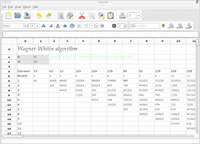

| About |
Pyspread is a cross-platform
Python spreadsheet application. It is based on and written in the
programming language Python. Instead of spreadsheet formulas, Python expressions are entered into the spreadsheet cells. Each expression returns a Python object that can be accessed from other cells. These objects can represent anything including lists or matrices. |
 |
|
|---|---|---|---|
| Features |
|
 |
|
| warning |
The concept of pyspread allows doing everything from each cell that a
Python script can do. This powerful feature has its drawbacks. A spreadsheet may very well delete your hard
drive or send your data via the Internet. Of course this is a
non-issue if you sandbox properly or if you only use self developed
spreadsheets. Since this is not the case for everyone (see discussion at lwn.net), a GPG signature based trust model for spreadsheet files has been introduced. It ensures that only your own trusted files are executed on loading. Untrusted files are displayed in safe mode. You can approve a file manually. Inspect carefully. |
||
| Requirements |
Pyspread runs on Linux, Windows
and *nix platforms with GTK+ support. There are reports that it works
with MacOS X as well. However, OS X is not officially supported. Dependencies Highly recommended for full functionality |
||
| Maturity |
Pyspread is in early Beta
release. This means that the core functionality is fully implemented
but the program needs testing and polish. On OS X, pyspread is considered Alpha because the user interface is not displayed correctly. There are icon size issues in version 0.1.2, which have been addressed in the development trunk. Toggle icon images are still corrupted. |
||
| Contribute |
Help making pyspread better. You do not have to code yourself for that.
Post bug reports and comments or ideas for improvement. If you are
looking for concrete contribution tasks please have a look at the forum
Contribution tasks. Each contributor will be mentioned in the About dialog of pyspread. |
||
| License | Pyspread is free
software. It is released under the GPL v3. |
||
| contact |
mmanns < at > gmx < dot
> net |
Copyright 2008-2011 Martin
Manns
Last changed: 07. January 2011
{kind=link}
{kind=link}